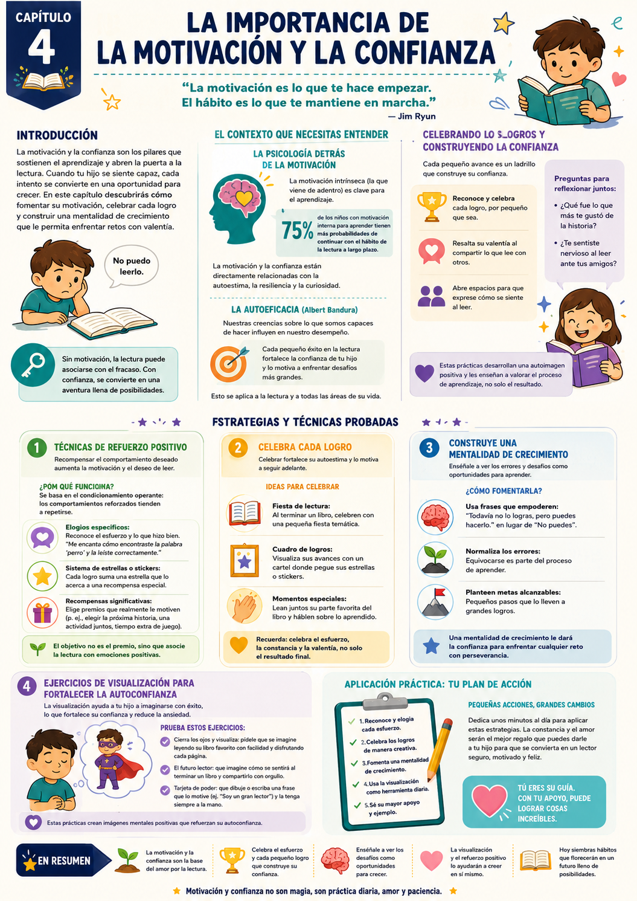

Tu hijo está frente a un libro. Sus ojos recorren las páginas pero la frustración se dibuja en su cara. Te dice en voz baja: "No puedo leerlo." Esa frase, aunque breve, es un eco de inseguridades que puede marcar toda su relación con la lectura.
La lectura no es solo una habilidad técnica — es una puerta a la autoconfianza. Si no trabajamos la motivación y la confianza, cada intento de leer se convierte en una batalla. Pero cuando la confianza brilla, la lectura se transforma en aventura.
Motivación intrínseca
La que viene de adentro. El 75% de los chicos con motivación interna continúan leyendo a largo plazo.
Confianza que se construye
No se otorga — se cultiva a través de pequeñas experiencias positivas acumuladas.
El ciclo virtuoso
Confianza → intenta → logra → más confianza. O al revés: frustración → evita → menos práctica → más frustración.
Lo que dice la teoría de Bandura
La autoeficacia — creer que podemos hacer algo — influye directamente en nuestro desempeño. Si tu hijo cree que puede leer, lo intentará más. Si cree que no puede, lo evitará. Por eso construir confianza desde pequeños logros es la estrategia más poderosa.
✅ Antes de arrancar este capítulo

Tuki te dice:
La motivación y la confianza no son magia — son práctica diaria, amor y paciencia. Este capítulo te da las herramientas concretas para construirlas.
Para ayudar a tu hijo a motivarse, primero hay que entender cómo funciona la motivación en los chicos — y por qué el refuerzo positivo es tan poderoso como herramienta de aprendizaje.
Motivación intrínseca vs extrínseca
La diferencia que marca el largo plazo
La motivación intrínseca (la que viene de adentro — curiosidad, placer, orgullo) es la que sostiene el hábito lector a largo plazo. La extrínseca (premios, notas, presión) puede funcionar a corto plazo pero no construye el amor por leer.
El objetivo no es que tu hijo lea para ganarse un premio — es que lea porque le gusta, porque se siente capaz, porque la historia lo atrapa. Los premios son una herramienta de transición, no el destino.
La clave
Usá los premios para arrancar el hábito, pero siempre combinados con elogios específicos que construyan la imagen de "soy un buen lector". Esa imagen interna es lo que dura.
El refuerzo positivo específico
No alcanza con "bien hecho"
Cuando tu hijo lee algo bien, en lugar de decir "¡Muy bien!", probá con algo específico: "Me encanta cómo encontraste la palabra 'aventura' y la leíste correctamente. ¡Sos un gran lector!"
Este tipo de elogio específico no solo valida el esfuerzo — refuerza la imagen positiva que él tiene de sí mismo como lector. Con el tiempo, esa imagen se vuelve parte de su identidad.
- 1Nombrá exactamente qué hizo bien — la palabra, el párrafo, la expresión.
- 2Conectalo con su identidad: "eso es lo que hace un buen lector".
- 3Celebrá el esfuerzo, no solo el resultado — "vi que lo intentaste varias veces, eso es lo importante".
Mentalidad de crecimiento
Carol Dweck — los errores como oportunidades
La psicóloga Carol Dweck descubrió que los chicos que creen que sus habilidades pueden mejorar con el esfuerzo (mentalidad de crecimiento) perseveran más ante los desafíos y aprenden más rápido.
El antídoto al "no puedo" es el "todavía no puedo". Ese pequeño cambio de frase transforma el fracaso en una etapa del proceso.
- 1Cuando diga "no puedo", respondé: "Todavía no podés — pero cada vez que practicás, mejorás".
- 2Compartí tus propias experiencias de aprendizaje — que vea que vos también tuviste que practicar.
- 3Establecé metas pequeñas y alcanzables — el logro de metas cortas construye confianza.
Ejemplo concreto
Si se frustra con una palabra difícil: "Es normal que esta palabra sea difícil al principio. Pero cada vez que la intentás, te volvés más fuerte como lector. ¿La probamos juntos?"
Tuki te dice:
Celebrá el esfuerzo y cada pequeño logro que construye su confianza. Enséñale a ver los desafíos como oportunidades para crecer.
Acá van las tres estrategias principales del capítulo — refuerzo positivo, celebración de logros y mentalidad de crecimiento — con los pasos concretos para implementarlas esta semana.
Sistema de puntos y recompensas
Motivación externa → hábito interno
Un sistema de puntos crea una estructura visible del progreso. El chico puede ver cuánto avanzó y eso alimenta las ganas de seguir.
- 1Creá un gráfico de progreso en papel grande y colgalo en un lugar visible.
- 2Establecé el sistema: por cada página leída, 1 punto. Por cada libro terminado, 5 puntos.
- 3Definí premios significativos — elegir la cena, una salida especial, tiempo extra de juego.
- 4Celebrá cada hito con una pequeña ceremonia — que sea un momento especial, no solo un sticker.
Tip clave
Los premios tienen que ser significativos para él — no para vos. Preguntale qué le gustaría ganarse. Eso multiplica la motivación.
Mural de logros lectores
Visualizar el progreso · Para toda la familia
Un mural visible del progreso no solo motiva al chico — también celebra el esfuerzo frente a toda la familia. Eso tiene un poder enorme en la autoestima.
- 1Conseguí una cartulina grande o usá una pared con papel afiche.
- 2Cada libro terminado tiene su espacio — pueden pegar la portada, dibujar el personaje favorito o escribir la parte que más les gustó.
- 3Decoren el mural juntos con stickers, colores y dibujos suyos.
- 4Al llegar a un número de libros (5, 10, 20), organizá una pequeña celebración familiar.
Tip clave
Hacé que la decoración del mural sea un proyecto conjunto — la conexión emocional con el proceso aumenta la motivación.
Celebraciones de lectura
Rituales que crean recuerdos positivos
Las celebraciones convierten la lectura en un evento especial — algo que se espera con ganas, no algo que se hace por obligación.
- 1Fiesta de lectura: al terminar un libro, hacen una pequeña celebración — merienda especial, elegir la peli del viernes, lo que él quiera.
- 2Tarjetas de reconocimiento: escribí una tarjetita con algo específico que hizo bien. Dásela en un momento inesperado.
- 3Momentos de reflexión: preguntale "¿cómo te sentiste al leer esto?" — que verbalice el orgullo es parte del proceso.
Tuki te dice:
El objetivo no es el premio — es que tu hijo asocie la lectura con emociones positivas. Eso es lo que dura toda la vida.
Dos ejercicios concretos para aplicar esta semana, más las recetas del capítulo. Todo con materiales simples y tiempo estimado.
📦 La Caja de los Logros
¿Para qué sirve? Crea un recordatorio visual y emocional de todo lo que el chico ya logró. Cada vez que dude de sí mismo, la caja le muestra la evidencia de que puede.
- 1Decorá la caja juntos — colores, dibujos y stickers que le gusten. Que sienta que es suya.
- 2Definan juntos qué cuenta como logro: leer una página solo, terminar un cuento, leer en voz alta frente a alguien.
- 3Por cada logro, escriben una tarjeta de color describiendo qué pasó. Él puede decorarla.
- 4Cada vez que agregan una tarjeta, lo celebran — aunque sea con un aplauso y un abrazo.
Resultado: Un objeto físico lleno de evidencia de que puede — y que lo motiva a seguir llenándolo.
🦸 La Historia del Superhéroe Lector
¿Para qué sirve? Asociar la lectura con una identidad positiva — "soy un lector" — a través de la creatividad.
- 1Pedile que invente un superhéroe que represente la lectura — puede tener sus características favoritas.
- 2Escriban juntos una mini historia sobre cómo ese superhéroe ayuda a otros a amar los libros.
- 3Él ilustra las escenas — que dibuje al superhéroe leyendo, enseñando, salvando el día con un libro.
- 4Cuelguen el dibujo en su cuarto — que lo vea todos los días.
Resultado: Tu hijo crea una representación positiva de sí mismo como lector — y esa imagen empieza a construir su identidad.
⭐ Sistema de Recompensas de Lectura
¿Para qué sirve? Crear una estructura visible que motive a leer más frecuentemente.
- 1Creá un gráfico de progreso en papel grande y colgalo donde él lo vea siempre.
- 2Definí los puntos: 1 punto por página, 5 por libro terminado.
- 3Decidí juntos qué premios se pueden ganar y cuántos puntos cuestan.
- 4Celebrá cada hito del gráfico — no esperes al premio final.
🏆 Mural de Éxitos
¿Para qué sirve? Visualizar el progreso lector de forma creativa y motivadora.
- 1Diseñá el mural juntos — que él decida cómo organizarlo.
- 2Por cada libro terminado, agregan la portada o un dibujo del personaje favorito.
- 3Pueden agregar una frase corta con lo que más les gustó.
- 4Al llegar a 5, 10, 20 libros — celebración especial.
- 1Subestimar los logros pequeños: cada avance cuenta. Ignorarlos desmotiva. Celebrá todo.
- 2Comparar con otros: cada chico tiene su ritmo. Las comparaciones generan frustración, no motivación.
- 3Expectativas poco realistas: la lectura es un proceso. Metas alcanzables construyen confianza — metas imposibles la destruyen.
- 4Ignorar el ambiente: el espacio de lectura tiene que ser cómodo y atractivo. Un entorno agradable mejora la experiencia.
- 5Olvidar la diversión: si tu hijo asocia la lectura con estrés, la va a evitar. La lectura tiene que ser placentera, no una obligación.
Tuki te dice:
¡Terminaste el Cap 4! En el Cap 5 vemos cómo integrar la lectura en la vida diaria para que se convierta en un hábito natural — no en una tarea más.
Esta infografía resume los conceptos clave del capítulo. Guardala para tenerla a mano cuando necesites recordar cómo motivar a tu hijo.

Infografía · Capítulo 4 — La Importancia de la Motivación y la Confianza
Tuki te dice:
¡Excelente! Ya tenés todas las herramientas para construir la motivación y confianza de tu hijo. En el Cap 5 vemos cómo integrar la lectura en la vida diaria.